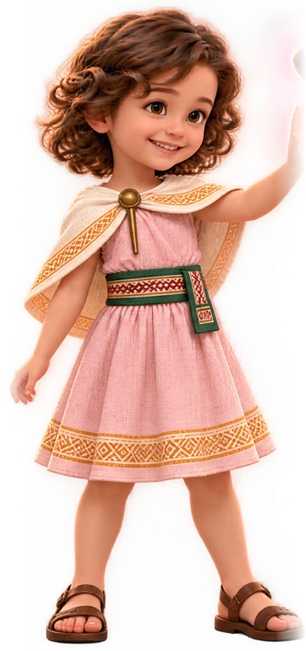
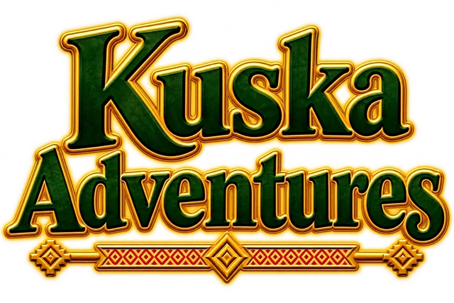
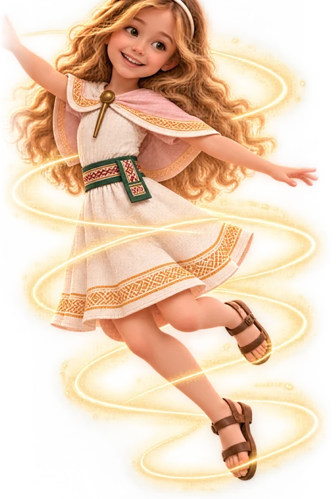
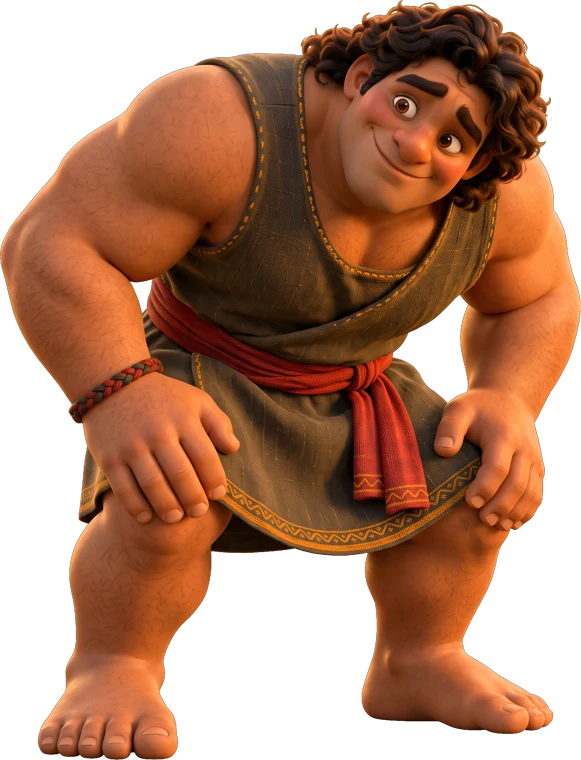
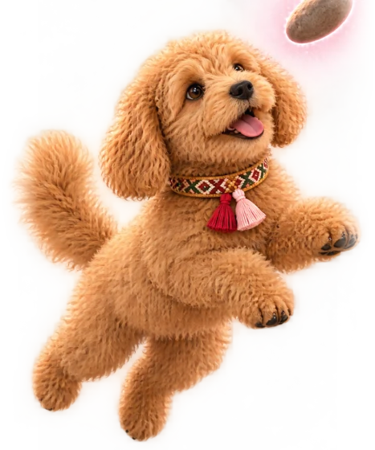
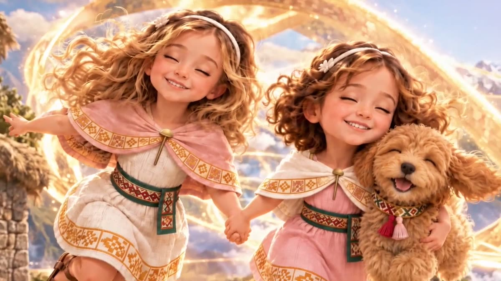
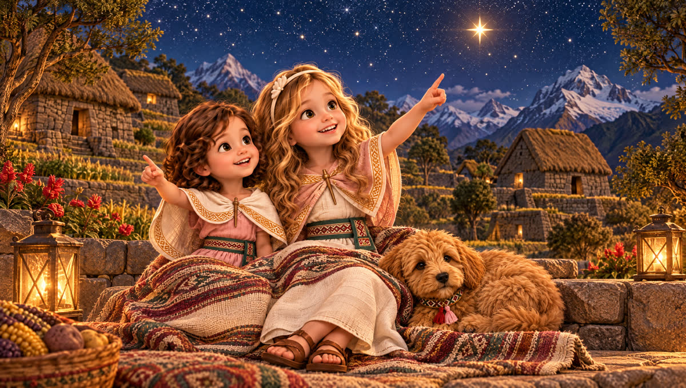

Melody
Curiosa, valiente y llena de grandes preguntas.
✨ Mueve cosas con un brillo rosado
Una serie animada para niños y familias. Dos hermanas. Un valle andino mágico. ¡Grandes emociones y aventuras aún más grandes!
Lilah y Melody no pueden esperar a que llegue su magia familiar. Y cuando por fin llega, ¡nunca funciona como esperaban!

Curiosa, valiente y llena de grandes preguntas.
✨ Mueve cosas con un brillo rosado
La hermana mayor a la que le encanta ir adelante.
✨ Desaparece entre cintas doradas
Un gigante bondadoso, más valiente de lo que cree.
🌼 Buscando el camino a casa
La perrita más dulce y saltarina del valle.
🐾 Siempre la primera en notar la magiaLilah y Melody: Aventuras Kuska es una serie animada para niños de 3 a 7 años y los adultos que la ven con ellos. Las hermanas Lilah (7) y Melody (6) viven en Nayaluma, un pueblo mágico del Valle Sagrado del Perú. Su magia familiar llega poco a poco, entre errores graciosos y decisiones valientes, y cada episodio trata de una gran emoción: ser escuchado, pedir perdón, esperar, ser valiente, incluir a los demás. Además, cada episodio enseña una palabra en quechua, la lengua viva de los Andes. Episodios nuevos cada semana en YouTube, en español e inglés (Lilah and Melody: Kuska Adventures). Ver la guía de episodios.
Dos hermanas, una caja mágica de la familia y un valle en los Andes. Canta con Lilah, Melody y Miski.

Se abre en YouTube, donde nuestros videos están marcados como contenido para niños.
El quechua es una lengua viva que hablan millones de personas en los Andes. ¡Di estas palabras con nosotros!

Aventuras Kuska está hecha para niños pequeños y los adultos que la ven con ellos.
Todos los videos están marcados como contenido para niños, sin comentarios ni anuncios personalizados.
Este sitio no tiene anuncios, cookies, registros ni rastreadores. Política de privacidad
Sin sustos de chiste. Nadie es nunca "demasiado pequeño".
Inspirada en las culturas andinas, su vestimenta y el quechua, creada con cuidado.
Episodios nuevos cada semana.
Nuestras redes son para adultos. Niños, ¡pregunten primero a un adulto!